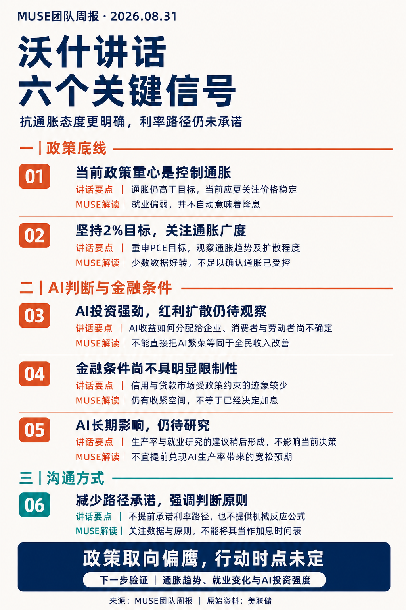

MUSE团队周报
海外高利率约束未退，国内制度托底仍待需求验证。沃什更明确强调抗通胀，但未给出加息时间表；AI资本开支支撑盈利的同时，也可能强化融资与资源需求。
核心判断一：沃什 Jackson Hole 讲话更明确地强调抗通胀，但未给出加息时间表。鹰派表态有助于稳定对抗通胀决心的预期，但能否持续缓解长债与融资压力，还需要市场数据验证。
核心判断二：AI 投资一边支撑订单和盈利，一边可能通过融资竞争与实物需求增加利率压力。科技股的关键不只是盈利有没有增长，还在于盈利上修能否超过市场预期，并抵消贴现率和估值的压力。
核心判断三：国内地产政策着眼于制度与融资机制重构，信用风险改善能否转化为商品需求企稳，仍需回款、资金与施工数据共同验证。
若通胀继续黏着、需求仍有韧性，收紧压力将上升，高利率约束可能持续较长时间。持续高位不等于连续加息，具体节奏仍取决于后续数据。若通胀趋势明确改善或就业明显转弱，政策节奏仍可能调整。
以图说话 · 两张图看懂本期核心
FIGURES

沃什讲话与利率约束：抗通胀态度更明确，但行动时点未定
本周最重要的宏观变量是 Jackson Hole 全球央行年会（每年 8 月举办，美联储主席讲话被视为政策风向标），美联储主席沃什的讲话更明确地强调抗通胀。讲话当日，短端美债收益率上行幅度明显大于长端，收益率曲线走平——市场更重视近端政策收紧风险，但长端利率压力并未消失。
需要说明的是，以上为美国财政部日度口径的观察窗口。日度数据变化不等于已识别出的讲话净因果影响，若引用周度或盘中窗口，应另列对应数据。
沃什上任以来的政策思路一脉相承：宁愿短期让市场承受一些收紧的痛感，也要维护长期美元、美债的信用和抗通胀可信度。此前美国财政部长贝森特干预长债的效果有限，若沃什在抗通胀问题上犹豫，长端美债利率可能进一步上行，对美国财政、AI 融资和全球债市流动性都会形成压力。因此他需要向市场展现强硬态度和独立性。
鹰派表态有助于稳定对抗通胀决心的预期，但能否持续缓解长债与融资压力，还需要美元融资、信用利差、国债流动性等市场数据验证。政策可信度、美债期限溢价和美国主权信用也不是同一个概念，不宜混为一谈。
本次 Jackson Hole 是沃什上台以来信息量较大的一次讲话，六个要点如下：
一、当前更侧重控制通胀，仍保留双重使命。如果通胀回落太慢或走平，也需要加息，这是最关键的鹰派信号。就业优先级下降，是因为美联储无法控制劳动力供应的缩水（移民、人口年龄等），并非放弃就业目标。
二、重申 2% PCE 目标，同时重视通胀趋势和广度。采用旧的通胀广度/扩散度指标，之前能淡化通胀压力的截距 PCE 不再强调——表决心，不能让潜在的宽松信号重新刺激市场的不信任。
三、AI 红利如何分配仍是开放问题。沃什认为 AI 带来的积极效应可能让企业盈利增长刺激招聘、居民消费变好，但这更多是其主观判断，AI 收益如何分配给企业、消费者与劳动者尚不确定，不能直接把 AI 繁荣等同于全民收入改善。
四、整体金融条件尚不具明显限制性，仍有收紧空间。AI 对资本的需求旺盛，对利率的敏感程度还没充分体现，处于临界点；工商业贷款和房贷也偏宽松。"仍有加息空间"是 MUSE 解读，不是讲话原文的直接承诺。
五、AI 生产力提升带来通缩，短期无明确结论。之前市场把长期宽松预期押注在这一块，逻辑成立但需要时间观察，27 年能否兑现是 MUSE 的条件预测，不是讲话事实。
六、减少路径承诺，强调判断原则。沃什并未提供机械的政策公式，而是给大方向让市场自己划重点。虽然比不上鲍威尔时代清晰，但至少有一个锚，市场焦点回到经济数据上。
下次 FOMC 会议为美国时间 9 月 15—16 日，决议对应北京时间 9 月 17 日。此前重点关注 9 月 4 日非农和 9 月 11 日 CPI，同时跟踪职位空缺（JOLTS）、PPI 等数据。
若通胀继续黏着、需求仍有韧性，收紧压力将上升；若通胀趋势明确改善或就业明显转弱，政策节奏仍可能调整。市场定价的加息概率高于 50% 代表当前预期，不是政策承诺，应注明来源和统计时点。
【高利率约束】未退
沃什更明确强调抗通胀，但未给加息时间表。鹰派有助于稳定预期，长债压力能否缓解需市场数据验证。
【曲线走平】短端上行更大
讲话当日短端上行幅度明显大于长端，曲线走平。长端利率压力并未消失，不是"长端下降"。
【关键节点】9月FOMC
美国时间9月15-16日会议，中间盯CPI和非农，同时跟踪JOLTS、PPI。通胀黏着则收紧压力上升。
AI 与利率机制：繁荣支撑盈利，也可能强化利率约束
按住短期风险的代价，是利率长期压力可能加剧。这里有个很多人没绕过来的弯：AI 投资一边支撑订单和盈利，一边可能通过融资竞争与实物需求增加利率压力。
具体来说，需求端通胀压力来自 AI 资本开支向传统经济传导（居民就业、收入、消费），以及 AI 和政府抢融资；供给端通胀压力来自油价、关税和劳动力供应持续减少。两者互相强化，形成利率的双重上行力量。
科技股的关键不只是盈利有没有增长，还在于盈利上修能否超过市场预期，并抵消贴现率和估值的压力。AI 基本面好，不等于科技股一定涨。在盈利预期未上修、利率压力未缓解前，对指数估值扩张保持谨慎。
在通胀黏性和 AI 投资保持韧性的情景下，美国高利率约束可能持续较长时间。持续高位不等于连续加息，具体节奏仍取决于后续数据。"2027—2028 年持续加息""6 月全球货币拐点"这类跨年度判断，覆盖范围和预测期限都显著超出一场讲话能支持的结论，应作为条件情景而非确定判断。
若高利率最终使融资和资本开支收缩，需求降温可能重新打开宽松空间。完整链条是：高利率或回报不及预期 → 融资与资本开支收缩 → 需求降温 → 通胀或就业压力变化 → 宽松空间可能打开。
资产价格下跌本身不是自动降息条件，泡沫破裂也不是必要条件——它只是压力情景中的一种触发方式。若生产率改善、资源约束缓解，或资本开支开始退潮，也可能改变利率约束的强度。
若业绩低于已计入价格的预期，估值回撤风险上升。重演 7 月暴跌并非没可能，但不是必然结果。需警惕美股科技波动对 A 股的情绪传导，A 股短期仍以结构性机会为主。
【盈利支撑】AI订单与收入
AI资本开支继续支撑订单和盈利，企业盈利改善支撑股价。但盈利增长需超过市场预期才能推动估值。
【利率约束】融资与实物需求
AI融资需求增加+实物需求扩张（能源、金属、半导体）→ 利率上行压力 → 融资成本上升、估值承压。
【条件情景】宽松如何打开
高利率使融资和资本开支收缩→需求降温→宽松空间可能打开。泡沫破裂是触发方式之一，不是唯一条件。
国内制度改革：地产融资机制重构，信用改善待需求验证
本周国内政策的重点是房地产领域的制度与融资机制重构。多部门围绕住房销售、房地产信贷和资本市场融资推出或公布配套安排，具体包括：
商品住房销售制度：住房城乡建设部、自然资源部、金融监管总局联合发布，分类推进现房销售、规范预售与资金监管。
房地产信贷制度：人民银行、金融监管总局发布，主办银行制、开发贷期限与建设销售周期匹配。
资本市场支持：证监会发布，项目融资、再融资、并购重组等安排。
需要分清文件与发文主体，不宜把"贯彻党中央、国务院部署"写成"国务院直接发布"。此外，证监会文件网页标注 2026 年 8 月 28 日，正文落款却为 2025 年 12 月 27 日，发布、成文和实施时间不能混为一谈，也不宜把全部条款都称为当周新增政策。
房地产融资与销售制度正在转向以项目为基础、资金封闭管理、融资期限与建设销售周期匹配的新模式。对预售回款的依赖下降，会提高资金管理要求，但主办银行制及开发贷配套也在缓冲转型压力——央行答问明确开发贷覆盖建设周期，预售项目最长 5 年、现房销售项目最长 7 年。
因此不能概括为"银行贷款退出，房企主要改靠自有资金"。政策一面降低预售依赖，一面配套融资安排，两者同时存在。房地产发展模式持续转型，不宜给一个缺乏对应正式文件的单一"废除日期"。
现房销售按项目类别有序推进，存量项目有衔接安排，仍保留预售安排——不能写成所有项目立即切换现房销售，也不宜让读者形成"现房销售时代全面到来"的印象。改革效果会随新项目占比提高逐步体现。
制度改革有助于降低交付与资金挪用风险，对具备资金、项目或整合能力的企业是积极信号，但不能直接推导出新增实物需求。商品需求能否企稳，应看销售回款、开发资金、新开工与施工强度能否同步改善。房企数量减少不等于建设量必然下降，项目可转移到其他主体，融资配套也可能改变新开工节奏。
个人住房贷款最长期限延长至 40 年的安排可以保留，但具体期限仍由银行与借款人协商，并非人人自动获得 40 年贷款。在本金、利率和还款方式相同的条件下，期限拉长通常降低各期月供、增加累计利息，不是仅降低最初几年的压力。
以纯计算例子说明（不作为市场利率或贷款报价）：假设贷款 100 万元、年利率全程固定 3%、等额本息、无提前还款和费用，30 年月供约 4,216 元、全期利息约 51.78 万元；40 年月供约 3,580 元、全期利息约 71.83 万元。月供减少约 15.1%，全期利息增加约 20.06 万元。
延长期限可以降低月供门槛，但不直接改善收入预期，实际需求拉动仍取决于银行执行和居民收入稳定性。"作用非常有限"应限定为对总需求的判断，不宜笼统否定其对特定群体的减负效果。
基建方面，多部门促进下半年投资的内容多是对前期重要会议的落实。目前主要堵点是地方在项目储备、政绩观和领导换届压力下，实物工作量落地积极性不高。应观察专项债实际使用、项目开工和实物工作量，不直接推断动机。
海外利率对国内工业品更像是宏观背景音，不至于形成太强的向下杀跌驱动。黑色建材、化工主要还是在消化自身产业端的逻辑，等成本/供应故事消退，需观察是否回吐供应扰动溢价。旧经济仍处于深度调整阶段，从量变到质变需要年度级别以上的时间。
【制度重构】融资与销售
多部门分别推出配套安排，转向项目为基础、资金封闭管理、期限匹配。主办银行制和开发贷配套缓冲转型压力。
【需求验证】仍需数据确认
信用风险改善能否转化为商品需求企稳，需看销售回款、开发资金、新开工与施工强度同步改善。房企数量减少≠建设量下降。
【房贷40年】降门槛非改善收入
期限由银行协商，非人人自动获得。降低月供但增加累计利息，不直接改善收入预期，需求拉动取决于银行执行和居民收入。
地缘补充与四个验证点
地缘方面，伊朗与阿曼推进恢复安全通航的阶段性框架，临时航道和扫雷安排受到关注，但永久航道及管理机制仍待磋商。谈判进展与实际运输恢复需要分别观察，不宜让"协议达成"暗示永久方案已落地、通航已正常化。
制裁与航运限制的重要性上升，避免暗示军事风险已经退场。影子运输仍存在，不能单独证明极端断供概率低，需看实际装运、保险、船东接受度和终端交付。海峡通航量和运费数据应注明提供方、航线、单位和时间窗口，区分可见 AIS 船数、实际装运量与运费报价。
油价对地缘消息的边际脱敏是市场反应判断，不等于供应风险消失。若保留 80—90 的观察区间，应说明品种（Brent/WTI）、合约月份、参考窗口、区间依据及失效条件。"中期选举前很难上 100"属于条件预测，不应由政治意愿直接推出。
以下给出判别方向，不编造数值阈值；正式阈值应结合已核验基线设置。
| 主判断 | 支持它的证据 | 需要调整判断的信号 |
|---|---|---|
| 利率约束持续 | 通胀趋势和广度改善缓慢，需求仍有韧性 | 通胀持续回落，或就业与融资明显恶化 |
| AI 繁荣受到利率约束 | 资本开支继续上修，同时融资成本或资源瓶颈加重 | 生产率改善、资源约束缓解，或资本开支开始退潮 |
| 地产政策尚未带来需求反转 | 融资制度改善但销售、施工、新开工未同步转强 | 回款、到位资金和施工强度出现持续共振 |
| 油价对地缘消息边际脱敏 | 同类冲击下价格反应减弱且实际供应维持 | 装运下降、航运保险受限、终端交付受阻 |
【地缘】制裁与航运限制
伊朗阿曼推进阶段性框架，永久航道仍待磋商。制裁与航运限制重要性上升，供应风险未消失。
【油价】边际脱敏≠无风险
市场对地缘消息反应减弱是市场判断，不等于供应风险消失。观察区间需注明品种、期限和失效条件。
【验证点】四个跟踪方向
利率约束、AI与利率、地产需求、油价脱敏，各有支持证据和调整信号，持续跟踪验证。